Estimation, sampling distributions, and confidence intervals.
Myoglobin is an oxygen-carrying protein that is found in the muscle tissue of vertebrates, but reaches particularly high concentrations in diving mammals. The myoglobin concentration in the muscles of Weddell seals, one of the best deep sea divers in the world, is 72.40 mg/g wet mass. Myoglobin gives up oxygen bound to it at lower partial pressures of oxygen than hemoglobin, which makes myoglobin well suited for storing oxygen for use after blood stores have been depleted. Myoglobin concentration in terrestrial mammals is much less, and it is only 6.45 mg/g wet mass.
You're probably used to reading textbooks with paragraphs like the one above, but you may not have developed the habit of wondering how we know what the myoglobin concentration for Weddell seals is. It's time to start developing that habit.
When you read a paragraph like the one above, you should be aware that:
-
Reporting a single value, like 72.40 mg/g, isn't meant to imply that every Weddell seal has this concentration. This is an average value, and you can safely assume that individual seals vary around it.
-
Even though the value of 72.40 mg/g comes from the best available information, it is based on data from just a small subset of the Weddell seals living in the world at any given time. That is, a sample of Weddell seals was measured, and we use the mean of the sample as an estimate of the mean for the entire population of Weddell seals.
The first point reflects scientific shorthand - scientists all know when a number is reported to reflect an entire population it is almost certainly an average, and so they treat this as obvious and expected, and may not bother to explicitly say that the number is an average value.
The second point is due to the fact that complete information is usually impossible to get. Scientists know this, and are used to the fact that we always have to use samples drawn from populations to infer what is going on in the population as a whole.
For example, myoglobin concentration can be measured with a blood test
or a tissue biopsy. Weddell seals live in the Antarctic, and hunt under
pack ice. They can only be captured when they haul out on the surface of
the ice, next to a breathing hole. Say that we were able to mount an
Antarctic expedition, brave the harsh conditions, and through heroic
effort we were able to get blood samples from 20 Weddell seals. If all
our measurements from 20 seals could tell us was the myoglobin
concentration from those 20 individuals, the information would probably
not be worth the trouble, risk, or expense. In the sciences we are
interested in discovering general principles, not just in documenting
minute, individual details.
Fortunately for us, we can tell a great deal more from our sample of 20 seals than just the average myoglobin concentration for those individuals. We can use the information from this sample as an estimate of the myoglobin concentration for the entire population of Weddell seals.
There's a problem with using the mean from our sample as an estimate of the population mean, however. Individual seals will vary in their myoglobin concentrations, and the mean of the 20 we captured would probably not be exactly the same as the mean from a different set of 20, and both would probably be at least somewhat different from the actual mean for the population as a whole. This is not a problem we would have if we had captured every single Weddell seal - we could calculate an average for the population and be done with it. When we sample, though, we have to deal with the fact that our particular sample isn't going to be exactly equal to the population mean. This sampling variation leads to uncertainty about the actual value of the population mean.
We are going to now learn about how to use information from samples to
estimate population properties, and how to deal with the uncertainty
that comes from inferring the properties of a population from a sample
drawn from it.
We're interested in populations, but we work with samples
In statistics, a sample is a
collection of measurements, taken from a larger population
of interest. In Biology, a population is a group of individuals of the
same species found at the same place and time. In statistics the term
"population" is a little more general - it is defined as the set of
possible observations from which we are drawing our sample. This means
that the population is determined by how we are sampling - if we want to
estimate the mean myoglobin concentration of the entire species of
Weddell seals, then the entire species is our statistical population. If
we were sampling hairs from your head and measuring their thicknesses,
the population would be all the hairs on your head.
We take it as a given that our population has properties (such as a
mean) that we could simply calculate if it was possible to measure all
of the members of the population. The true mean and standard deviation
of myoglobin concentration for the species are called population parameters.
Parameters are what we actually want to know, but we can only estimate them using the information in a sample. If we want to estimate the mean for a population, we would select a sample of subjects, measure them, and calculate the mean of the sample as the estimate of the population mean. Up until this point we have considered the mean and standard deviation as summary statistics for a collection of data, which they are, but they are also estimates of parameters.
To make it clear when we are referring to a parameter, we use Greek symbols to denote them. The sample statistic that is an estimate for the population parameter is denoted with Arabic letters. For example:
| Statistic | Population parameter | Sample estimate |
|---|---|---|
| Mean | μ (lower-case mu) | x̄ |
| Standard deviation | σ (lower-case sigma) | s |
| Variance | σ2 | s2 |
The formulas used to estimate a parameter from a sample are called estimators. So, the formulas you have learned so far for mean, standard deviation, and variance are the estimators for the population parameters that correspond with them. If we had complete information about every individual in the population, we could calculate the parameters directly - the formula for each parameter, and its sample-based estimator, is shown here:
| Statistic | Population parameter | Sample estimator |
|---|---|---|
| Mean |
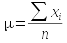 | 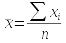 |
| Standard deviation | 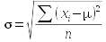 |
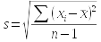 |
| Variance |
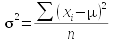 |
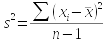 |
You should be able to see that the formula for the population mean and sample mean are the same - the only difference is that for μ we would be summing a measurement from every individual in the entire population, whereas the sample estimate is just based on those included in the sample.
The formulas for standard deviation and variance, though, have two differences between population parameter and sample based estimator. The first is that we would subtract the population mean from each data point if we were to calculate the population standard deviation or variance, and we would divide by n instead of n-1. For the sample based estimators, we would need to use the sample mean, and since that is itself an estimate of a parameter, we would divide by degrees of freedom instead of sample size. Degrees of freedom is the sample size, minus 1 for each estimate used in the calculation.
The basis for measuring uncertainty - sampling distributions
As biologists, we deal with variable material - biological organisms are not carbon copies of one another, and this variability in organisms leads to variability in our estimates. Given that we expect no two samples of different individuals to give us identical estimates, we need a way of assessing how close to the population parameter our estimate is likely to be. In other words, we need to know how variable our sample estimates can be.
An important part of dealing with this uncertainty is that we have to sample in a particular way - we need to sample at random. If every individual in the population has an equal chance of being selected, then we are using simple random sampling, or SRS. Everything we learn about how to deal with uncertainty in our sampling assumes that we have used SRS.
A quick simulation of the SRS process should help illustrate the point. Imagine that there are a very large number of Weddell seals in our statistical population (infinite numbers would be best mathematically speaking, but 10,000 will serve as a "very large number" for our purposes). A histogram of this hypothetical population of 10,000 seals is shown to the left.
Because this is a hypothetical, made up example, we can calculate the population parameters by simply calculating the mean and standard deviation for all 10,000 seals. The values are: mean = 72.4, sd = 7.2.
The animation below shows what kind of variation in sampling we expect if we sampled from this population with a small sample size of 2 seals. We would select two seals and calculate an average of them as an estimate of the population parameter. We expect that a second set of 2 seals will be somewhat different, and we can see how different to expect the sample means to be by repeating our sampling many times. Run the animation to see how this would work.
This histogram of means is an example of a sampling distribution. Sampling distributions show variability in sample estimates drawn at random from a population. Any difference between our sample means and the true mean is called sampling variation, or sampling error, so sampling distributions are distributions of sampling error. Sampling error is not desirable, but can never be completely eliminated.
There are a couple of important things to notice about this histogram:
- The middle of the distribution is at 72.4, which is the population parameter. The average of all 1000 averages is equal to the parameter - so, simple random sampling is unbiased.
- The sample means may never exactly equal the population parameter.
Sample means close to the actual parameter are most common, and they
become less common further from 72.4. This sampling variation is
inversely related to sampling precision - the more
variable the sample means are the less precise the estimate of the
parameter is.
- Although we can't predict the mean of a single random sample drawn from this population, most of the sample means fall between about 62 and 82 mg/g. Thus, even if we didn't know that the parameter was 72.4, we could make a pretty good guess that the parameter is between 62 and 82 based on these sample means.
Sampling error and confidence intervals
We used the sampling distribution, above, to make a statement about the range of values that are likely for the population parameter, between 62 and 82. This was a rough guess read from the x-axis on the histogram, and we can do better. We will use confidence intervals that are statements of possible values around an estimate that are likely values of the population parameter.
But first, we have to solve a problem. The sampling distribution we
produced by randomly sampling 1000 times at a sample size of 2 isn't a
practical way of assessing sampling variation. Remember, it's hard work
to just get a single sample seals (even if that sample only has 2 seals
in it), and it would be impossible to sample 2 seals 1000 times in order
to determine our sampling error.
Fortunately for us, it's possible to calculate a measure of our
sampling error from the information in a single
sample. This measure of variability is called the standard
error of the mean, or just the standard
error (denoted either as s.e., or sx̄).
|
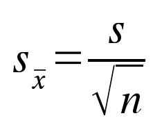 |
The formula for the standard error is shown to the left. This simple relationship shows that variability among means of random samples (sx̄) is equal to the sample standard deviation (s), divided by the square root of the sample size (n). Think of the standard error as measuring the dispersion in the histogram of sample means we generated above. The standard error is thus a measure of sampling variability, which is the opposite of precision. If the standard error is large, then we would expect repeated samples to have means that are very different from one another - our precision would be low. If the standard error is small, then repeated samples would give means that are close together - our precision would be high. |
Based on this simple formula, we can expect a couple of things to be
true about standard errors...let's see if you can predict what they are:
- As the sample size gets bigger, what should happen to the standard error? Click here to see if you're right.
- If there is a lot of individual variation among measurements, what should happen to the standard error? Individual variation is represented by s in this formula. Click here to see if you're right.
We can confirm the first expectation, that more data leads to better precision, with our simulation by selecting samples of different sizes - the simulation, above, is repeated below with sample sizes of 5, 10, and 20 so you can see how increasing sample size affects sampling variation.
|
Sample size n = 5 |
|
Sample size n = 10 |
|
Sample size n = 20 |
You can see that for every sample size the mean of our sample means falls at the true parameter value of 72.4, so random sampling is unbiased at every sample size, but the means are much closer together (and thus closer to the parameter) as the sample size goes up. If you collected a small sample (like n=2) the fact that your estimate isn't biased shouldn't give you much comfort, though, because it's possible to get a mean that is really far away from the true value (remember, bias is only one way to be wrong in statistics, and it's no worse than low precision).
So, based on these simulations we expect that larger sample sizes
should give us more confidence in our estimate of the population mean.
Confidence intervals
Now, say that we have myoglobin concentration data from a sample of 20 seals, with a mean of 71.3, and a standard deviation of 6.8. We can calculate a standard error by dividing 6.8 by the square root of 20, which give us a standard error of 1.52. The mean is the best estimate of the parameter, but given that the standard error is telling us we have some sampling error, we know that the population mean we are estimating could very well be different from 71.3. If we can't know what the parameter value actually is, it would be nice to at least know how far off we might be. Given what we know about sampling variation, we could calculate how small the population parameter might be, and how large it might be, given the standard error that we calculated. This range of likely values for the population parameter is called a confidence interval.
We have already learned that we expect 95% of observations in a
population with a bell-shaped distribution to fall within 2 standard
deviations of the mean (actually, more precisely, 1.96 standard
deviations). The standard error is like the standard deviation of a
sampling distribution, so it seems as though we would expect 95% of
sample means to fall within 1.96 standard errors of our estimate. This
is the right idea, but we can't use 1.96 standard errors - remember, the
standard error is calculated from the standard deviation, which in turn
is estimated from the sample mean. Since we are basing the estimate of s
on an estimate of x̄, we have some extra uncertainty we need to account
for. If we want to capture 95% of the possible sample means, we will
need to go out more than 1.96 standard errors. The question is, how many
standard errors?
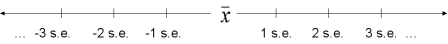
To determine the number of standard errors needed, we can use a
mathematical model of a sampling distribution called the t-distribution
to determine how many standard errors wide our confidence
interval should be.
The t-distribution is bell-shaped, but it is flatter in the middle with "heavier tails" than the classic bell-shaped normal distribution. The amount of difference between the normal and the t depends on sample size, which we convert to degrees of freedom when we use the t-distribution. For confidence intervals, degrees of freedom are n - 1. By convention, t-distributions have a mean of 0, and the units on the x-axis are standard errors.
Below is an example of a t-distribution (in red), with a sample size of 5, and thus n - 1 = 4 degrees of freedom. The shaded region includes 95% of the area under the curve. The t-values along the x-axis that define this shaded region are called critical values, and the upper critical value is reported. Since t-distributions are symmetrical around the mean, the lower critical value is just the negative of the upper critical value (lower critical at df = 4 is thus -3.182). For comparison, a normal curve with mean of zero and standard deviation of 1 is also plotted (in blue). The x-axis is labeled t, which has units of standard errors - that is, a t of 2 is 2 standard errors from the mean of 0. The y-axis is the probability of being t standard errors away from the mean of 0.
Mean of sample means
Enter a sample size (n = 2 or more)
Try changing the sample size and see what happens to the red t-distribution (the blue normal curve isn't affected by degrees of freedom, so it will stay the same). You can see that at small sample sizes the t-distribution is quite a bit flatter than the normal distribution. Since t-distributions are flatter in the middle and higher in the tails, we need to go out further on either side of the mean to capture 95% of the area under the t-distributions than we do to capture 95% of the normal distribution. As the degrees of freedom gets larger and approaches infinity the t-distribution converges on the normal curve, and it would only be necessary to go out 1.96 standard errors to encompass 95% of the area under the curve, just like with a normal curve.
For our Weddell seal example, with a sample size of 20 we would have 19 degrees of freedom. If you set the sample size to 20 you'll see that the critical t-value is 2.093. This means that we would need to go 2.093 standard errors above and 2.093 standard errors below the mean to encompass 95% of the possible sample means for Weddell seal myoglobin concentration.
A common way to find critical t-values is to look them up in a table, like this one. The value of 2.09 is found in the column 0.05 in the row for 19 degrees of freedom (there are actually two different sets of column labels, one corresponding to α(2), and one to α(1). The symbol α refers to what proportion of possible parameter values you are going to exclude - if we want to include 95%, then we would exclude 5%, and we want to pick the column for 0.05. The 2 in the parentheses for α(2) means that this proportion is to be divided equally to fall above and below the sample mean. So, use the column with 0.05 in the α(2) row to pick your t-value).
One thing you can easily see in the table is that the benefit of increasing sample size is huge at small sample sizes. At a sample size of n=2, and df = 1, you need to go 12.7 standard errors from the mean to encompass 95% of the possible sample means. There is less of an effect as sample size increases - you can see that the table increases in df by 1 through df = 30, by 5 for 30 to 40, by 10 from 40 to 100, and then jumps to 1000 and finishes at 2000. The reason for this is that the t-values change a lot at small degrees of freedom, but then don't change much above 30. You can confirm this with the curves, above - the t-distribution starts to match the normal curve above a sample size of about 30.
The 95% value, by the way, is called the confidence level. Confidence intervals customarily use a confidence level of 95%, but they don't have to. You could specify a confidence level of 99%, and all that would change is that you would look at the 0.01 column in the t-table. Let's check whether you can look up t-values: according to the t-table, with our 19 degrees of freedom, how many standard errors would we need to go out away from the mean to include 99% of the possible means? Click here to see if you're right.
How about this one - if you used the 0.02 column, what confidence level would you be using? Click here to see if you're right.
To construct a confidence interval we need to calculate the upper limit and lower limit between which we expect 95% of sample means to fall. We do this by adding our uncertainty to the sample mean to get the upper limit, and subtracting our uncertainty from the mean to get the lower limit - uncertainty is the critical t-value multiplied by our sample standard error. This gives us a range of values, centered on the mean, that is expected to capture 95% of the possible sample means.
The calculations look like this:
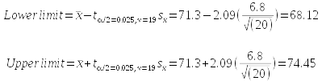
What does this tell us? Our best estimate of the population mean for myoglobin concentration from our sample of 20 seals is the mean of our sample, which was 71.3 mg/g. The confidence interval tells us that there is a 95% chance that that the true population mean is between 68.12 mg/g and 74.45 mg/g.
By the way, the long complicated subscript on t just indicates which t-value we are using; we select the t-value that will put 2.5% of the excluded 5% of the curve below the lower limit, and 2.5% of it above the upper limit (this is the α/2 part - we excluded 0.05, and 0.05/2 is 0.025), using a degrees of freedom of 19 (this is the ν = 19 part, where ν is Greek lower-case nu). In statistics, α is the standard symbol for the amount of the curve we wish to exclude, and ν is the standard symbol for degrees of freedom.
|
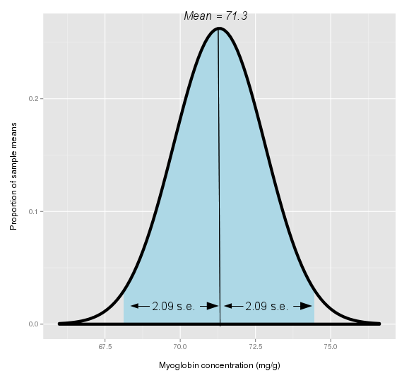Let's look at an illustration of what the confidence interval is meant to represent. The curve to the left is a sampling distribution, centered on our estimate of the population parameter (i.e. sample mean) of 71.3 mg/g. The curve peaks at the middle, because we consider our sample estimate to be the most likely value of the population mean. The fact that the curve doesn't drop immediately to the x-axis shows that the population mean could be a value other than our sample mean of 71.3. The curve shows us that values close to 71.3 are more likely than values that are far away. We pick up 95% of the possible values of the population mean when we are between 2.09 standard errors below to 2.09 standard errors above the sample mean. You can think of the confidence interval, then, as the light blue shaded region. Any concentration that falls inside of the confidence interval would be treated as a possible value for the population parameter other than the sample mean of 71.3 that's still consistent with the data we have in hand. On the other hand, concentrations that are outside of the interval only have a 5% chance of occurring given the data we have in hand, so they are unlikely values for the population parameter. The sample mean may be our best estimate of the population mean, but given that we know the estimate can be off to some degree, the confidence interval gives us a way of evaluating how far off we might be. Now, if we have a 95% chance that the confidence interval contains the parameter we're estimating, does that mean that 5% of 95% intervals will not? The animation on the right simulates selecting 1000 samples of size 20, and you'll see that 53 do not include the population mean. Since 53/1000 = 0.053, this simulation result is very close to 5%, just as we expected.
|
| 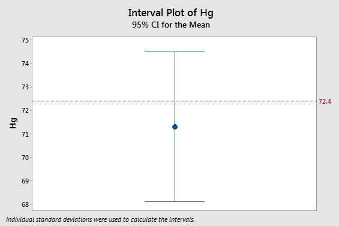
Let's wrap this up by returning to the original statement that myoglobin concentration for Weddell seals is equal to 72.4 mg/g - what does the fact that a sample of data gave us a mean that is 71.3 mg/g tell us about whether 72.4 mg/g is likely to be right or wrong? The graph to the left shows this mean with its 95% confidence interval, and the horizontal red line is at 72.4 mg/g. You can see that 72.4 isn't equal to the estimate, but it falls comfortably within the 95% confidence interval. Given the uncertainty in our estimate, we would consider a population mean of 72.4 to be consistent with our data. |
Sampling Distributions and the Central Limit Theorem
When we calculate a confidence interval, we use a single uncertainty value to calculate the upper and lower limits, and our confidence intervals are always symmetrical as a result. It isn't hard to imagine that a symmetrical distribution of data will give us a symmetrical distribution of sample means, but what about a distribution that isn't nice and symmetrical?
Enter a sample size:
A good example of a distribution that is not at all bell-shaped is this bimodal distribution of reaction times by neurons in the eye to a flashing black and white dot.
The graph on the left is a smooth curve representing the distribution of response times in the population as a whole. You can see that there is a big mode at 200 milliseconds (ms), and then a second much lower mode at 600 ms.
Because this is a hypothetical example, the mean for the population distribution can be known exactly, and it is μ = 333.33 ms, as indicated in the title of the graph.
The graph on the right shows a histogram of the means of 1000 random samples from this population, each using a sample size as specified (10 initially). There are a couple of things you should notice:
- At a sample size of 10, the sampling distribution doesn't look at all like the bimodal population distribution. There is only one mode, and the distribution is symmetrical.
- The middle of the sampling distribution is at 333.33, which is the population mean.
- As sample sizes increase the sampling distribution narrows - try increasing sample size to 50.
- At small sample sizes the shape of the distribution is visible in the sampling distribution - try reducing sample size to 1.
Given the symmetrical sampling distributions at larger sample sizes, we can expect that our simple, symmetrical confidence interval will continue to work well at predicting the distribution of sample means, even if the population distribution is not at all symmetrical and bell-shaped.
This tendency for sampling distributions to be bell-shaped, regardless of the distribution of the population from which they are derived, is called the central limit theorem (or CLT).
The CLT is the permission we need to use symmetrical confidence intervals, even when the data are not symmetrical and bell shaped, provided that our sample sizes are sufficiently large.
Complications: basements and ceilings
We have seen that the central limit theorem allows us to use a simple, consistent approach to constructing confidence intervals, even in cases in which the underlying distribution of the data is highly non-normal, thanks to the central limit theorem. However, there are some cases in which this simple approach does not work well. For biological data sets the most common cause of problems is asymmetrical distributions that have ceilings or basements that constrain the range of possible values for a variable. Ceilings are maximum possible values for a variable, and basements are minimum possible values for a variable. There are many examples of ceilings and basements in biology; proportions cannot be less than 0 or greater than 1, counts of objects cannot be less than 0, and most properties of physical objects (e.g. height, length, weight, etc.) are non-zero and positive.
| 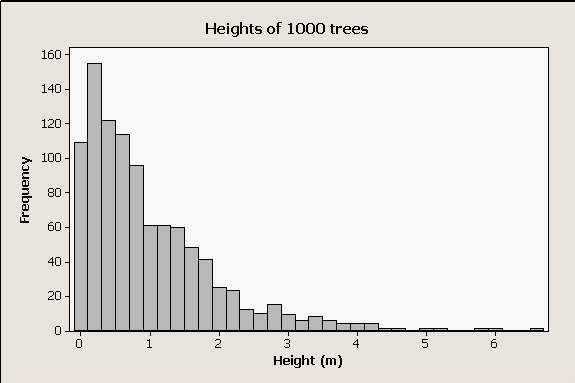 |
Take, for example, a strongly right-skewed data set like this one. These are data randomly generated from a skewed distribution, to represent the distribution of heights of trees in a forest. The distribution is highly skewed for two reasons - first, many organisms (including many trees) release large numbers of seeds but few reach maturity, which results in many more small trees than large trees. Second, it is impossible to have a negative height, which imposes a basement on this distribution. |
| 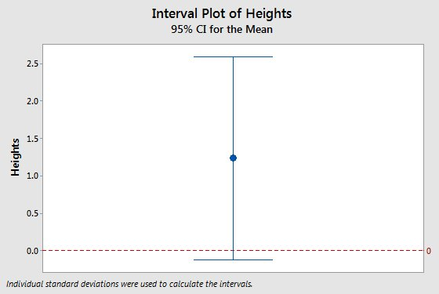 |
If we wanted to estimate the mean height of trees in this forest we could calculate confidence intervals for the estimate, and expect the central limit theorem to protect us as long as our sample size is large. But, if our sample size is not large enough, the central limit theorem may not always rescue us. The interval plot to the left is the mean and 95% confidence interval from a sample of 5 trees, and it has a problem. Can you see it? Click here to see if you're right.
|
Friday's activity
Friday we will explore issues relating to sampling, estimation, and confidence intervals. We will sample from populations of birth weights of human babies at various sample sizes, and compare confidence interval sizes. Based on class data, we will see whether our confidence intervals actually contain the population parameters we are estimating at the rate we expect. We will also see how sample size affects our ability to draw conclusions from our data.